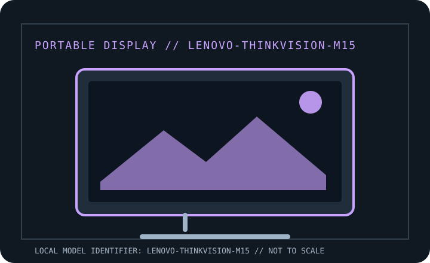

[ INDIVIDUAL COMPONENT // DISPLAYS ]
Lenovo ThinkVision M15
Manufacturer-specific portable monitor record. Verify the full rear-label SKU, region and documentation revision before connecting power or relying on a maximum mode.

IDENTIFICATION: Portable computer monitor SKU with a unique model record. Match the rear label and regional suffix to the manufacturer's product page/manual; similarly named models may use different ports or power behavior.
Specifications
| Catalog subcategory | Portable displays |
|---|---|
| Exact product / family | Lenovo ThinkVision M15 |
| Panel / diagonal | 15.6-inch IPS LCD, 16:9 |
| Native resolution | 1920 × 1080 (Full HD) |
| Native refresh / maximum | 60 Hz |
| Brightness (typical) | 250 cd/m² typical |
| USB-C interface | Two USB-C 3.2 Gen 1 ports with DisplayPort 1.2 Alt Mode; one supports power input/pass-through and the other can provide up to 65 W Power Delivery to a compatible notebook when supplied by an adequate adapter. |
| HDMI interface | No HDMI input; direct video connection is USB-C DP Alt Mode. |
| Power / USB Power Delivery | USB-C bus power; rated up to 65 W host pass-through in a supported charger/cable/host topology. No internal battery. |
| OSD / controls | On-device OSD buttons for brightness and image controls; standard video does not require a Lenovo utility. |
| Stand / mounting | Integrated foldable stand with adjustable tilt; no VESA mount. |
Host, OSD & compatibility notes
Host USB-C must carry DisplayPort Alt Mode video. System charging uses USB PD negotiation; USB-C data/charging-only ports do not provide video. Ordinary display operation is not Windows-exclusive, while host power management and utilities vary by OS.
Model-specific caveat: The two USB-C receptacles have distinct upstream/pass-through roles; consult the M15 user guide before wiring a charger. Native FHD at 60 Hz is the documented mode.
Field use & preservation
Protect the LCD/touch surface in transport, avoid loading the USB-C or HDMI sockets sideways, and test video, power and touch (where fitted) as separate signal paths. Keep the correct cable and power adapter with the monitor.
Record the rear-label model/serial, included cover/stand, cable and adapter ratings, signal timing, OSD configuration, panel condition and any repaired or substituted accessories. Do not open the enclosure; use the manufacturer's service procedure and a qualified technician.
Manufacturer documentation & sources
- Lenovo PSREF — ThinkVision M15 product specificationsOfficial Lenovo product reference/specification record.
- Lenovo — ThinkVision M15 user guideOfficial manufacturer-hosted user guide for setup, ports, OSD and safety.